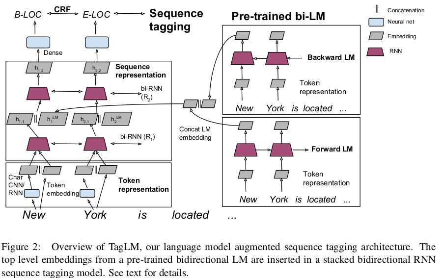

Introduction
This is the TagLM paper mentioned in Lecture 13 in the CS224N course title Semi-supervised sequence tagging with bidirectional language models
This paper demonstrates how we can use context embeddings from BiLSTM models and use it for sequence labelling tasks
Paper Introduction
Typically, RNN are used only on labelled data to learn the context embeddings of words.
Semi supervised approach used in this paper.
Train LM on large unlabelled corpus
Compute embedding at each position in the sequence(LM embedding)
Use embedding in supervised sequence tagging model
Using both forward and backward embeddings gives better performance than using forward only LM.
TagLM
Overview
Extract word and LM embeddings for every token
Prepare embedding by concatinating both embeddings
se them in supervised sequence tagging model
Baseline
Baseline model is hierachical neural tagging model
Obtain word and character embeddings. Concatenate them to form final embedding.
\[ x_k = [c_k;w_k] \]
Char embedding: Can be obtained via CNN or RNN
Word embedding: Use pretrained embeddings
Use multiple bidirectional RNN to learn context embedding
For every token, concatenate forward and backward hidden states at each layer
2nd layer will use the above output and predict next hidden state
Use GRU or LSTM depending on task
Use output of final layer to predict score for each possible tag using dense layer
Better to predict tags for full sequence than for a single token
THEREFORE, add another layer with parameters for each label bigram.
Compute sentence conditional random field loss(CRF) using forward-backward algorithm.
Use Viterbi algorithm to find most likely sequence

Overview of architecture LM embedding will be created by concatenating forward and backward embeddings. No parameter sharing between these two embeddings.
Experiments
Evaulation done on CoNLL 2003 NER and CoNLL 2000 chunking
Lot of detail around model architecture and training methods. Skipping this for now.
Analysis
Second RNN captures interactions between task specific context
Backward LM addition has significant performance gains
Model size makes a difference. Using bigger CNN model lead to 0.3 percent improvement
Also tried training the model JUST ON THE CoNLL data. Reduced model size
Including embeddings from this model decreased performance compared to baseline system.
Replacing task specific RNN with using LM embeddings with a dense layer and CRF reduced performance
Improvement shown by transferring knowledge from other tasks almost disappers when the initial model is trained on a large dataset.
Summary
- First method to incorporate contextual word embeddings using bidirectional networks.
- Significantly better than other methods at the time that use other forms of transfer learning or joint learning on NER and and Chunking tasks.
- It works well with unlabelled data from a different domain as well.